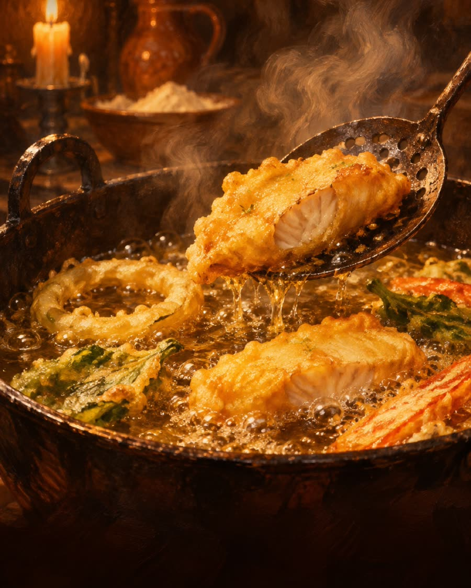
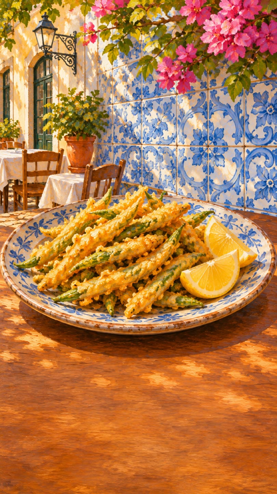
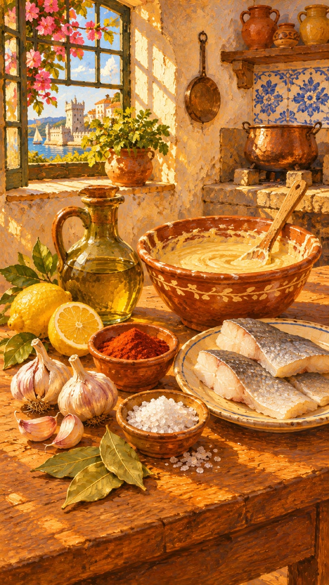
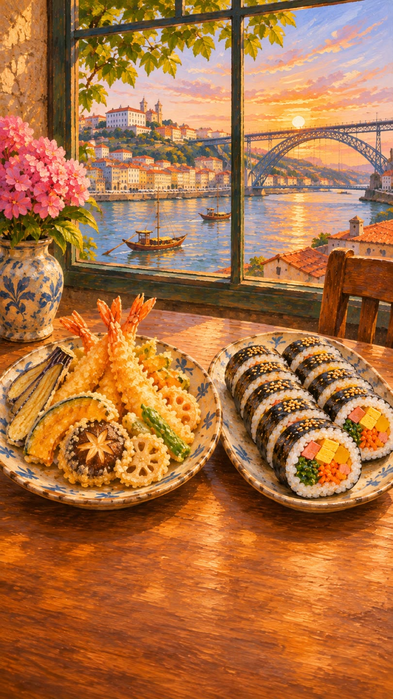

순례자의 한끼한밤
순례자의 한끼한밤일본 음식 덴푸라,
이 이름이 일본 말이 아닐 수도 있어요.
바삭한 새우튀김, 채소튀김. 일본 음식점에서 '덴푸라(天ぷら)'라고 부르는 그 튀김이요. 이름만 들으면 영락없이 일본말인데, 거슬러 올라가 보면 포르투갈 사람들이 나와요.
포르투갈 사람들이 처음 일본에 닿은 해.
뒤이어 선교사들도 왔어요.
1543년, 포르투갈 사람들이 일본에 닿았고 뒤이어 가톨릭 선교사들도 왔어요. 배에는 상인과 신부님들, 그리고 그들이 먹던 음식도 함께 실려 있었죠.

포르투갈 말 '템포라스(têmporas)'는 가톨릭에서 고기를 먹지 않는 절기를 말해요. 그날엔 고기 대신 생선과 채소를 반죽에 묻혀 튀겨 먹었대요.


포르투갈엔 지금도 그 흔적 같은 요리가 있어요. 그린빈을 반죽에 묻혀 튀긴 '페이시뉴스 다 오르타(peixinhos da horta)'. '밭에서 나는 작은 물고기'라는 귀여운 이름이에요.

이 템포라스가 '덴푸라'라는 이름이 됐다는 설이 있어요. 일본 사람들 귀에 그렇게 들렸다는 거죠.
이름이 건너온 길 (여러 설 중 하나)
다만 하나로 정해진 건 아니에요. 양념을 뜻하는 포르투갈 말 '템페루(tempero)'에서 왔다는 설도 있거든요. 어느 쪽이든 포르투갈 말과 이어져 있다는 이야기예요.

덴푸라가 일본 서민 음식이 된 건 에도 시대예요. 길거리 포장마차에서 꼬치에 꽂아 팔았고, 누구나 서서 사 먹는 간식으로 인기를 끌었어요. 고급 일식집 덴푸라만 떠올리면 의외죠.

저는 언젠가 포르투에서 식당을 하는 게 꿈이에요. 그 식탁에도 튀김 한 접시는 꼭 올리고 싶어요. 포르투갈에서 일본으로 건너간 튀김이, 한국 사람 손을 거쳐 다시 포르투갈로 돌아가는 셈이니까요.

순례길에서도 튀김은 자주 만났어요. 갈리시아에서 먹은 오징어 튀김은 지금도 생각나요.

그 바삭한 이름을 따라가면,
포르투갈이 나와요.
For pilgrims passing by
Tempura sounds completely Japanese, but the name may come from Portuguese. The Portuguese reached Japan in 1543, and missionaries followed. "Têmporas" were the Catholic days when meat was not eaten; on those days people fried fish and vegetables in batter instead. One theory says têmporas became "tempura"; another traces it to "tempero", Portuguese for seasoning. Portugal still has peixinhos da horta, battered and fried green beans. In the Edo period, tempura was sold on skewers at street stalls and became a popular snack.
참고한 자료
- 이름 유래는 포르투갈어 têmporas(금육 절기)설, tempero(양념)설 등 여러 설이 있습니다 (일본 문화청 식문화 조사 자료)
- 에도 시대 길거리 튀김: Google Arts & Culture 'Edo fast food: tempura', Kikkoman 식문화 자료
- Wikipedia 'Tempura', 'Peixinhos da horta'
- 사진: 2025년 순례길에서 직접 찍은 것 / 그림: AI로 그린 유화
🕯️ 오늘 밤 이야기는 여기까지.
여러분이 제일 좋아하는 튀김은 뭐예요?